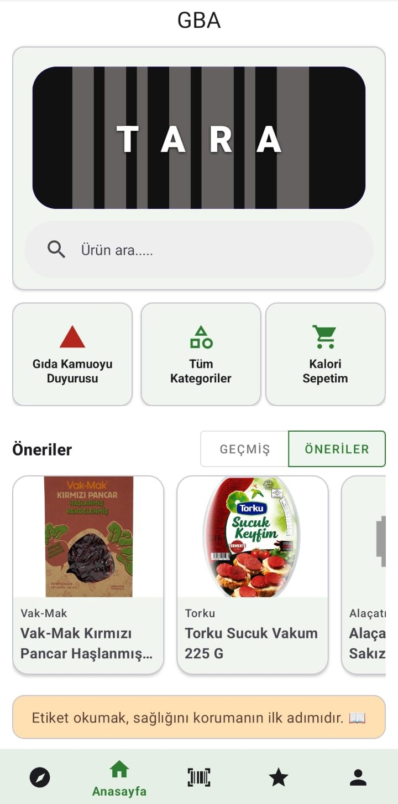
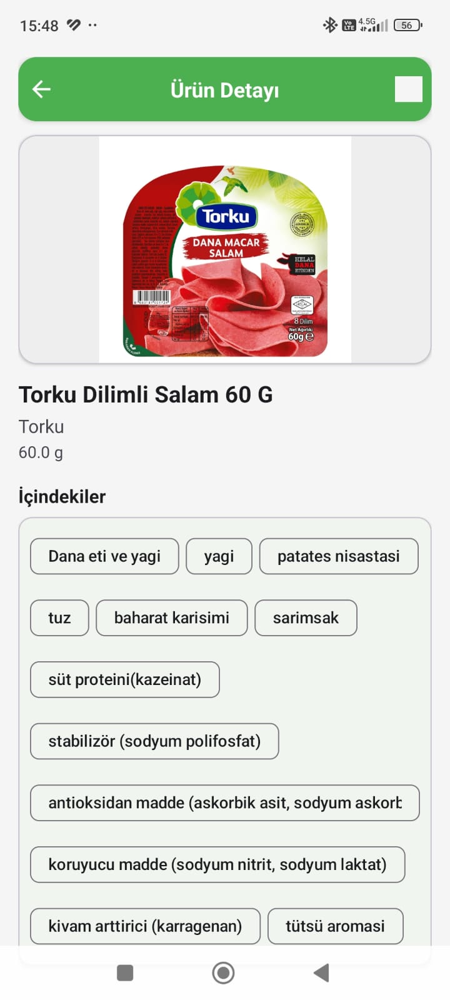
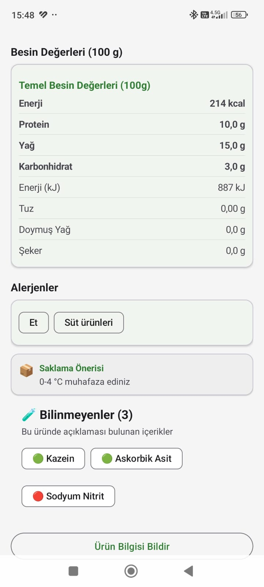
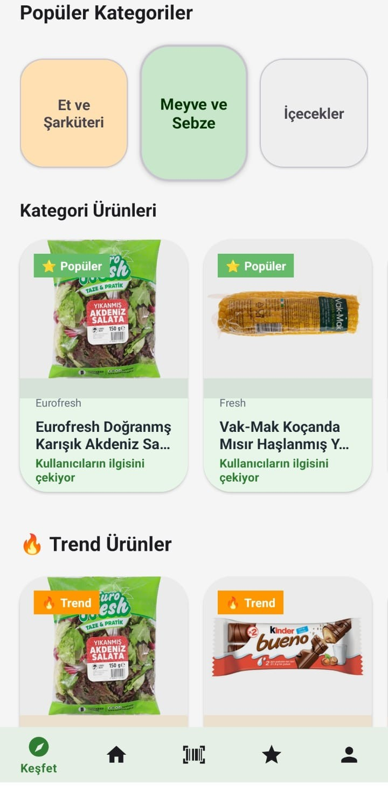
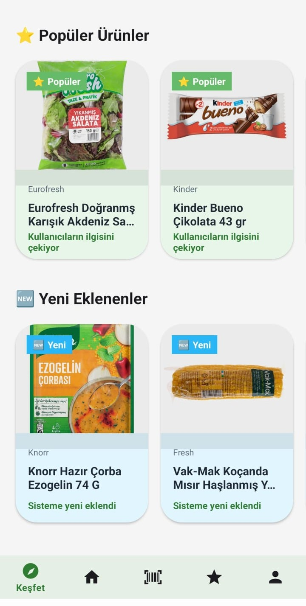

Vizyonumuz
Gıda sektöründeki karmaşık etiket ve içerik bilgilerini anlaşılır kılarak; her bireyin ne tükettiğini saniyeler içinde, hiçbir yönlendirme olmadan tam şeffaflıkla görebileceği küresel bir bilgi ve bilinç ekosistemi oluşturmak.
Misyonumuz
Gelişmiş barkod tarama ve yapay zeka altyapımızla, ambalaj arkasındaki karmaşık kimyasalları, katkı maddelerini ve alerjenleri kullanıcının anlayacağı yalın bir dile çevirmek; toplumsal sağlığı korumak.
GBA'nın Arkasında Kim Var?
GBA, ambalaj arkasındaki karmaşaya çözüm sunmak amacıyla doğmuş bağımsız bir teknoloji girişimidir. Temel amacı; ürün analizlerinde nesnel ve şeffaf kalırken, tüketicide merak ve farkındalık uyandıran, ne yediğini keşfetmesini sağlayan güvenilir bir dijital rehber olmaktır.
GBA Mobil Deneyimi
Direkt Barkod Tarama
Uygulama açıldığı an sizi karmaşık menülerle yormaz, doğrudan kameranızı aktif eder. Market rafındaki herhangi bir ürünün barkodunu saniyeler içinde okutup detaylı içerik analizini görebilirsiniz.
Kamuoyu Duyurusu
Tarım ve Orman Bakanlığı'nın yayınladığı taklit, tağşiş ve hileli gıda duyurularını entegre veri sistemimiz sayesinde tek elden anlık olarak deşifre edin.
Tüm Kategoriler
Veritabanımızdaki binlerce ürünü kategorize edilmiş liste halinde görüntüleyin. Merak ettiğiniz sektörü derinlemesine inceleyin.
Kalori Sepeti
Günlük kalori, makro ve mikro besin değerlerinizi pratik bir sepet mantığıyla takip edin. Vücudunuza giren tüm değerleri kolayca kontrol altında tutun.
Kişisel Profil & Veri Analitiği
Dinamik Grafik & Kalori Takibi
Günlük tükettiğiniz besin ve kalori değerlerini şık bir grafik üzerinde görün. Geçmişe dönük kayıtlarınızla beslenme alışkanlıklarınızı kolayca takip edin.
Haftalık İstatistiksel Özet
Profil ekranınız tam kapsamlı bir tüketim paneli sunar:
- ✓ Taranan Ürün Sayısı — Hafta boyunca kaç barkod deşifre edildi?
- ✓ Sorgulanan Ürün Sayısı — Toplam etkileşim hacminiz.
- ✓ En Çok Bakılan Kategoriler — Hangi gıda grubuna yoğunlaştınız?
- ✓ Favori Ürün Sayısı — Güvendiğiniz ve listenize eklediğiniz gıdalar.
Özel Filtreleme Mekanizması
Profiliniz üzerinden hayati zırhları aktif edebilirsiniz. Sistemimiz belirlediğiniz kriterlere uymayan gıdalarda anında kırmızı alarm verir:
Erişilebilirlik & Uygulama Ayarları
GBA herkes için kusursuz bir deneyim vaat eder:
- • Karanlık / Aydınlık Mod entegrasyonu.
- • Yazı Büyüklüğü esnekliği.
GBA Keşfet: Nabzı Tutun
Topluluğun anlık yönelimlerini ve gıda sektörünün en taze verilerini tek ekranda görüntüleyin:
Topluluk tarafından o dönem en çok sorgulanan 3 ana sektör.
Ambalaj arkası en çok deşifre edilen ürünlerin anlık listesi.
Admin onayından geçerek veritabanına dahil olan en güncel ürünler.
Benzer ürünler arasından senin için öne çıkan alternatifleri pratik şekilde karşılaştır.
Uygulamadan Kareler
GBA'yı ilk elden deneyimleyin
Kategoriler Tek Ekranda
Kategori kartlarıyla ürünleri keşfet, en çok tarananlara göz at. Sade ve hızlı bir ana sayfa deneyimi.
- • Kategori kartları ile hızlı gezinme
- • Tek dokunuşla barkod tarama
- • Kişisel önerilere doğrudan erişim

Ambalaj Arkasındaki Gerçek
İçerik listesi, alerjen uyarıları ve besin değerleri. Anlaşılır, renk kodlu ve okunaklı.


- • Renk kodlu içerik analizi
- • Size özel alerjen uyarıları
- • Kalori ve besin değerleri tablosu
Nabzı Tutun
Topluluğun trendleri, popüler ürünler ve yeni eklenenler. Gıda dünyasının nabzı elinizin altında.


- • Trend ve popüler ürünler
- • En çok sorgulanan kategoriler
- • Admin onaylı yeni eklenenler